Vaardigheid
Uitleg
25 personages · beginnersscript
Townsfolk
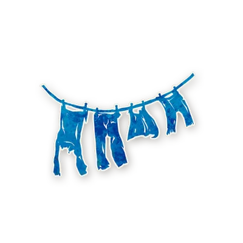
Washerwoman Townsfolk Weet welke Townsfolk een van twee spelers is.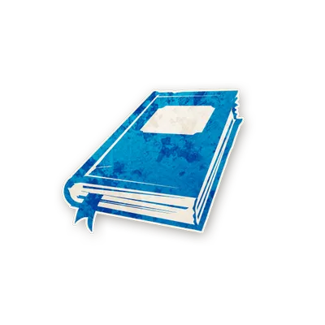
Librarian Townsfolk Weet welke Outsider een van twee spelers is.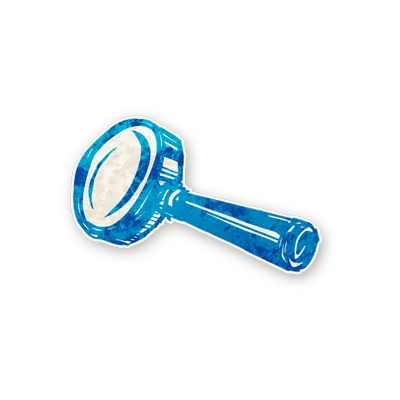
Investigator Townsfolk Weet welke Minion een van twee spelers is.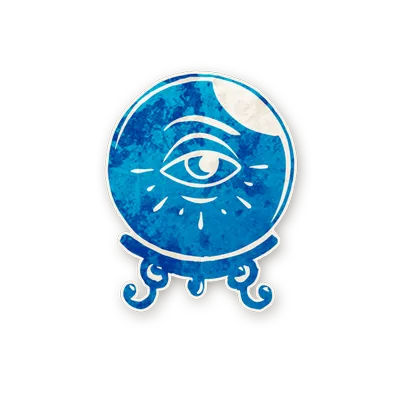
Fortune Teller Townsfolk Kiest elke nacht twee spelers: is een van hen de Demon?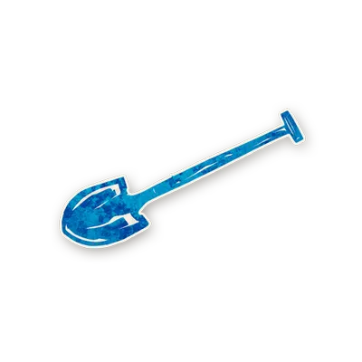
Undertaker Townsfolk Weet elke nacht welk karakter geëxecuteerd werd.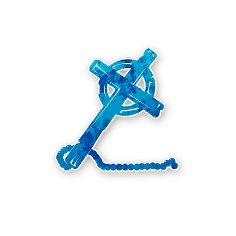
Monk Townsfolk Beschermt elke nacht een speler tegen de Demon.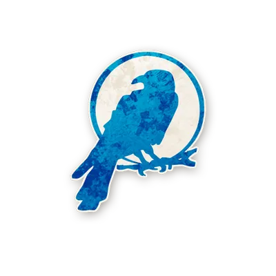
Ravenkeeper Townsfolk Sterft 's nachts: kies een speler en weet zijn karakter.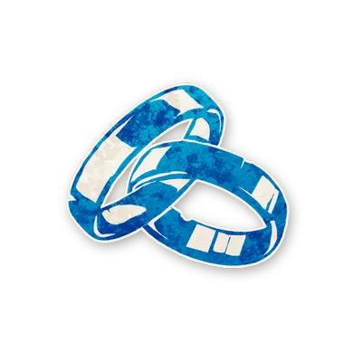
Virgin Townsfolk Eerste nominator die Townsfolk is, wordt geëxecuteerd.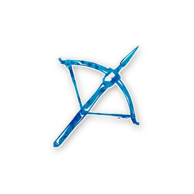
Slayer Townsfolk Eén keer: kies een speler. Is die de Demon, sterft hij.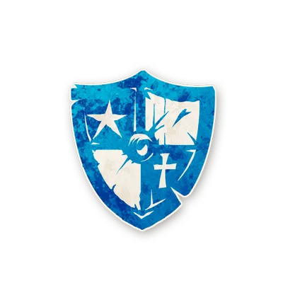
Soldier Townsfolk Immuun voor de aanval van de Demon.Outsiders
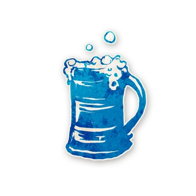
Drunk Outsider Denkt een Townsfolk te zijn, maar zijn info is onbetrouwbaar.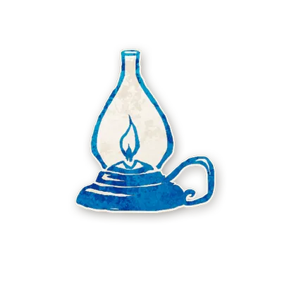
Recluse Outsider Kan vals geregistreerd worden als kwaadaardig of Demon.Minions
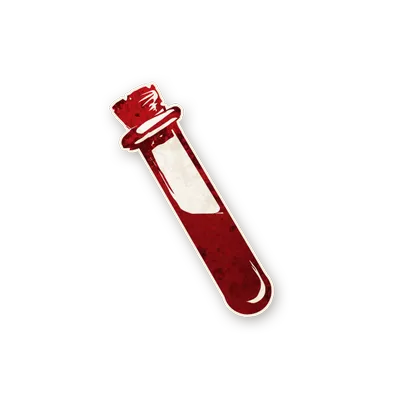
Poisoner Minion Vergiftigt elke nacht een speler: diens info is onbetrouwbaar.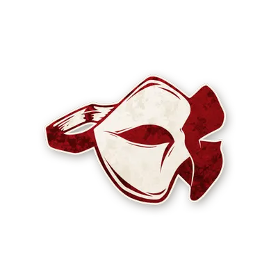
Spy Minion Ziet het Grimoire. Kan vals als goed geregistreerd worden.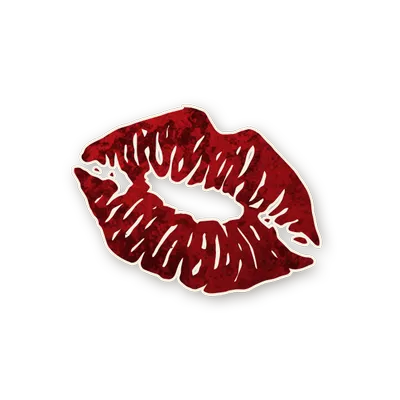
Scarlet Woman Minion Als de Demon sterft bij 5+ spelers, word jij de Demon.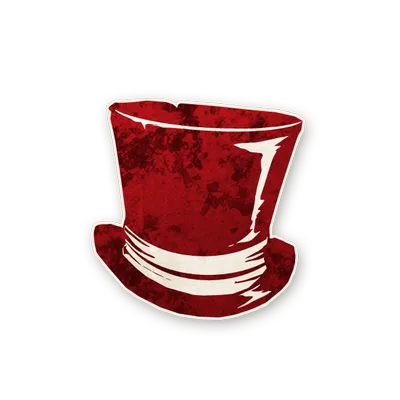
Baron Minion Voegt 2 extra Outsiders toe aan het spel.Demon